国立大学 様
禁水性物質のブチルリチウムで連続的に合成ができた！
課題・要望
有機合成の実験で、マイクロリアクターに薬液（BuLi）を供給する。
- 反応を厳密に制御したい
- 液を空気に触れさせたくない
- 液を結晶化させずに送りたい
導入後
- 脈動のない連続流で精密送液
- 密閉構造で液が漏れない
- 結晶化を起こさずに移送できた
スムーズフローポンプ フロー合成用途
ラボ・研究開発からパイロット、商業化まで、同じ構造のポンプを採用できます。完全密閉構造で、ブチルリチウムのような禁水性物質も外気に触れさせずに送液できます。
マイクロリアクター式で採用
ブチルリチウムを送液
パイロット・商業化まで同じ構造
フロー合成は、2種類以上の溶液を連続的に流し、温度や滞留時間（反応時間）をコントロールしながら化学合成を行う技術方式です。医薬中間体などの機能性化学品の製造工程で注目されています。
判断を誤れば、時間とコストを失います。
量産化でつまずく原因は、反応ではなく、ポンプかもしれません。
大切なのは、ラボから製造まで同じ構造のポンプを使えること。スムーズフローポンプは、ラボ・研究開発からパイロット、商業化まで同じ構造のポンプを採用できます。
禁水性物質（水や空気中の水分などと反応して発熱、発火する危険な化学薬品）の代表ともいえるブチルリチウム（BuLi）。使用の際は、完全密閉で外気に触れることのないスムーズフローポンプが選ばれています。
電源以外のユーティリティーは一切使わずに、ブチルリチウム溶液を送液できます。
一般的な往復動ポンプ吐出が途切れ、注入ムラが出る
スムーズフローポンプ Q同じ平均流量を、途切れずに送る
| 空気に触れると変質する液を送りたい | 完全密閉構造で液漏れ・外気接触なし。摩擦熱や局所的な圧力変化で液を変質・凝固させることもありません。禁水性物質も液性を保って移送できます（条件あり）。 |
|---|---|
| バルブの開け忘れ・配管の詰まり | 閉塞運転時もポンプに負荷がかからず故障しません。圧力が上昇すると送液を止め、ポンプと配管を保護します。 |
| 空運転になってしまった | 摺動部がないため、カジリ・焼きつき・摩耗・破損の心配がありません。 |
| 研究から生産へ移行したい | 同じ送液方式で大容量・高圧・高粘度・スラリー・防爆仕様に対応。ラボと生産ラインで同じ方式を使え、商業化までの時間を短縮できます。 |
スムーズフローポンプは2005年前後から、フロー合成のマイクロリアクター式で使われるようになりました。日本におけるフロー合成の研究・発展に参画するとともに、フロー合成に最適なポンプ、流体ソリューションの開発に取り組んでいます。
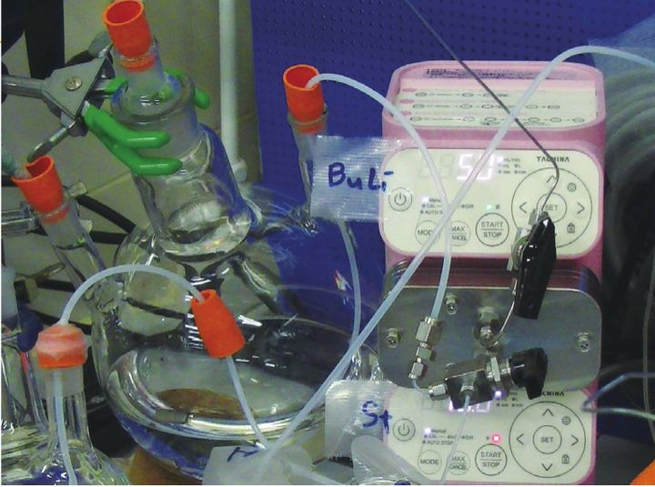
京都大学コンソーシアムのアニオン重合プロジェクトの論文への投稿、米国のジャーナル『OPR&D』記事への共同研究者としての参加もしています。
国立大学 様
課題・要望
有機合成の実験で、マイクロリアクターに薬液（BuLi）を供給する。
導入後
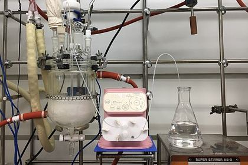
住友ファーマ株式会社 様
使い勝手のよい小型ポンプが合成実験に活躍
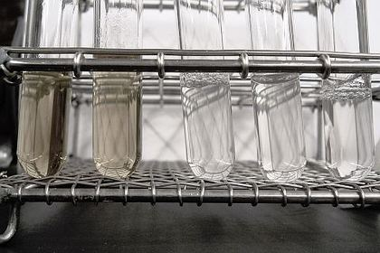
私立大学（理工学部）様
シリンジポンプでできなかった長時間の連続分光測定が可能に
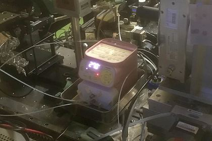
高エネルギー加速器研究機構 様
サンプル液を安定的に送液して原子の動きを観測
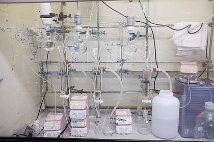
化学メーカー 様
ミキサーセトラーによる連続溶媒抽出を省スペースで
フロー合成向けの製品ラインアップが充実しているため、ラボ検討からスケールアップまで一貫して対応でき、安心して開発を進めることができます。
ラボ
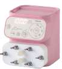
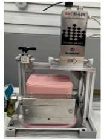
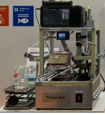
ベンチ
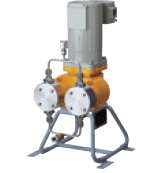
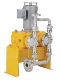
生産
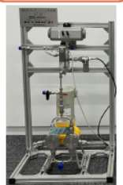
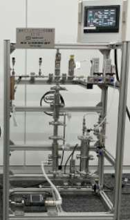
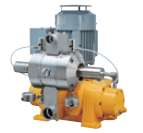
［差し替え予定］製品写真は構成案の画像を仮置きしています。高解像度の写真と製品名をいただき次第差し替えます。
関連製品：フロー合成と合わせて使われる世界最小クラスのスタティックミキサー／流量・圧力を計測できるフロー合成試験用装置／ベンチフロー反応装置
| 機種 | 100 | 60 | 30 | 10 |
|---|---|---|---|---|
| 吐出量mL/min | 0.1〜100 | 0.1〜60 | 0.1〜30 | 0.1〜10 |
| 最高吐出圧力MPa | 0.3 | 0.6 | 1.0 | 2.0 |
| ポンプヘッド材質 | PVC（100のみ）／PTFE（100・60のみ）／SUS316 | |||
流量は0.01mL/min単位で設定。Q-30-TTCT（スラリー対応）は0.1〜27mL/min。
| 機種 | 5 |
|---|---|
| 吐出量μL/min | 5〜5,000 |
| 最高吐出圧力MPa | 3.0 |
| ポンプヘッド材質 | PEEK／SUS316L |
流量は1μL/min単位で設定。
| 運転機能 | Q | QI | QT | 内容 |
|---|---|---|---|---|
| オートストップ運転 | ● | － | － | 運転時間または吐出量を設定して、自動で停止します。 |
| パルス入力比例運転 | － | ● | － | 外部からのパルス信号入力によって自動で運転します。 |
| アナログ入力比例運転 | － | ● | － | 外部からのアナログ信号（DC4-20mA）に比例して流量を変化させます。 |
| インターバル運転 | － | － | ● | 一定時間ごとにON/OFFを繰り返します。 |
| グラジエント運転 | － | － | ● | 運転時間の経過に比例して、流量を徐々に上げる／下げることができます。 |
| 信号出力機能 | － | ● | ● | 単位パルス出力・警報出力・動作出力。停止出力（インターバル・グラジエント運転の終了時）はQTのみ。 |
型式コード：SUB-QI − ①機種（流量） − ②接液部材質 − P（電源コード） − S（全般仕様）
| ① 機種 | 100 | 60 | 30 | 10 |
|---|---|---|---|---|
| 本体サイズ（参考）mm | W110×D173×H129 | |||
| 最大流量※1mL/min | 100 | 60 | 30（27）※4 | 10 |
| 流量制御範囲mL/min | 0.1〜最大流量まで | |||
| 最高吐出圧力MPa | 0.3 | 0.6 | 1.0 | 2.0 |
| ② 接液部 標準 | TT・6T・VE・VF | TT・6T | 6T | 6T |
| ② 接液部 スラリー | TTCT・6T6T | TTCT・6T6T | TTCT・6T6T | 6T6T |
| 周囲温度※2℃ | 0〜40 | |||
| 移送液温度℃ | 0〜40（凍結なきこと）。6T・6T6Tは条件により0〜60（凍結なきこと）※5 | |||
| 移送液粘度※3mPa·s | 200以下 | 100以下 | ||
| 対環境性 | IEC規格6：IP65相当（防塵・防水） | |||
| 電源 | AC100V専用プラグ付き（ケーブル2m） | |||
※1 条件：清水、室温 ※2 輸送・保管時は−10〜50℃ ※3・※5 詳しくはお問い合わせください ※4（ ）内は接液部材質がPTFEの場合
| 記号 | TT | 6T | VE | VF |
|---|---|---|---|---|
| ポンプヘッド | PTFE | SUS316 | PVC | PVC |
| ダイヤフラム | PTFE/CR | PTFE/CR | PTFE/CR | PTFE/CR |
| シート弁・パッキン | 特殊フッ素ゴム（パーフロ） | 特殊フッ素ゴム（パーフロ） | EPDM | 特殊フッ素ゴム |
| 継手 | PTFE | SUS316 | PP | PP |
| 接続口径チューブ径 | 吐出1/8×吸込1/4 | 吐出吸込φ6 | ||
| チューブ継手ねじ径 | 吐出1/4-28UNF 吸込1/2-20UNF | 吐出G1/8 吸込G1/8 | 吐出Rc1/8／吸込Rc1/8 | |
| 記号 | TTCT | 6T6T |
|---|---|---|
| ポンプヘッド | PTFE | SUS316 |
| ダイヤフラム | PTFE/CR | PTFE/CR |
| Oリング | 特殊フッ素ゴム（パーフロ） | 特殊フッ素ゴム（パーフロ） |
| チャッキボール | セラミック | SUS316 |
| 接続口径チューブ径 | 吐出1/8×吸込1/4 | |
| チューブ継手ねじ径 | 吐出1/4-28UNF 吸込1/2-20UNF | 吐出G1/8 吸込G1/8 |
※ チューブは付属しません。
| 信号 | 仕様 | |
|---|---|---|
| アナログ | 入力 | 1ポート／DC4-20mA／入力抵抗：約110Ω |
| デジタル | 入力 | 2ポート／無電圧接点・オープンコレクタ※／最大パルス数：6000pulse/min／最小パルス幅：5msec（ON時間）。パルス入力、停止/運転入力、レベル入力、MAX運転入力から選択して割り付け |
| 出力 | 2ポート／DC25V 10mA。単位パルス出力、警報出力、動作出力から選択して割り付け | |
※ オープンコレクタの残留電圧は1V以下となるようにしてください。デジタル信号はシンクロジック（NPN）です。
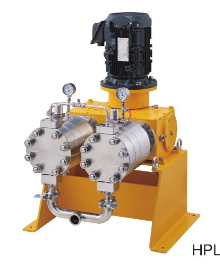
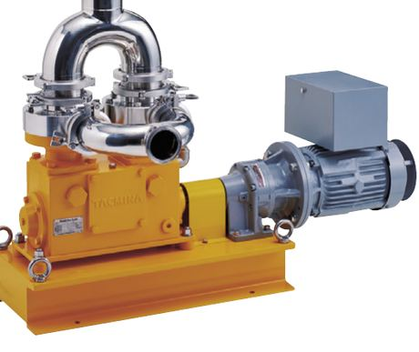
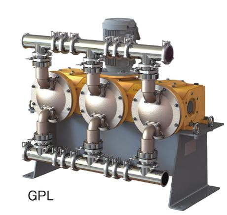
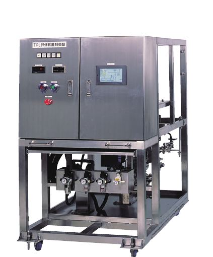
フロー合成用ポンプのデモンストレーションや貸し出し、一部のポンプは使う時だけレンタルできるサブスクリプションサービスも実施しています。
サブスク窓口｜対象機種 SUB-QI（ミリリットルクラス）
TEL06-7178-4508
Emailtac_subsc@tacmina.co.jp
本サービスは日本国内での利用に限ります。
まずはタクミナにご相談を。